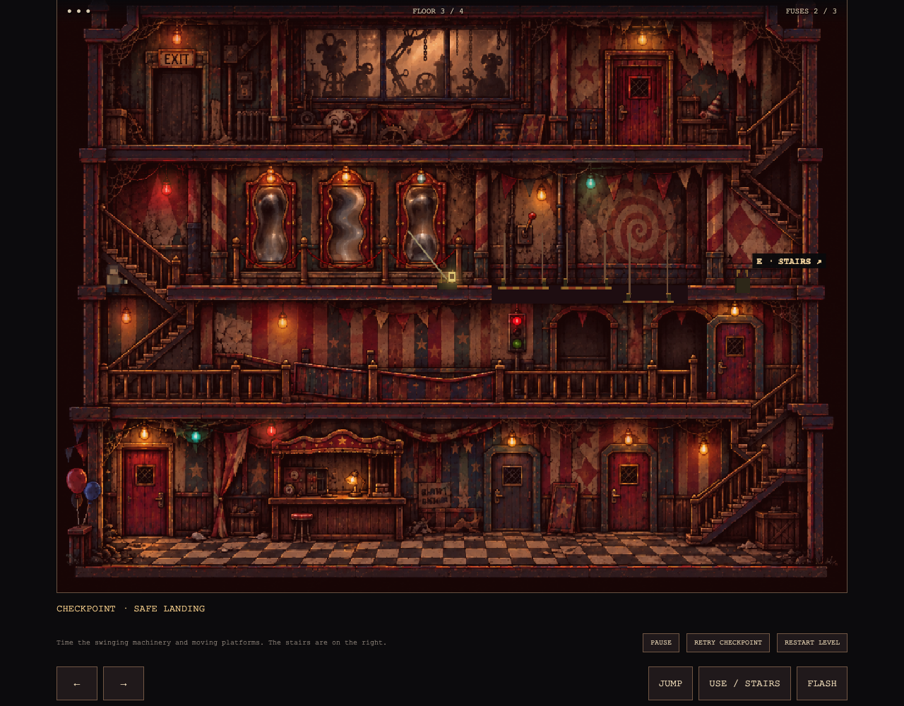
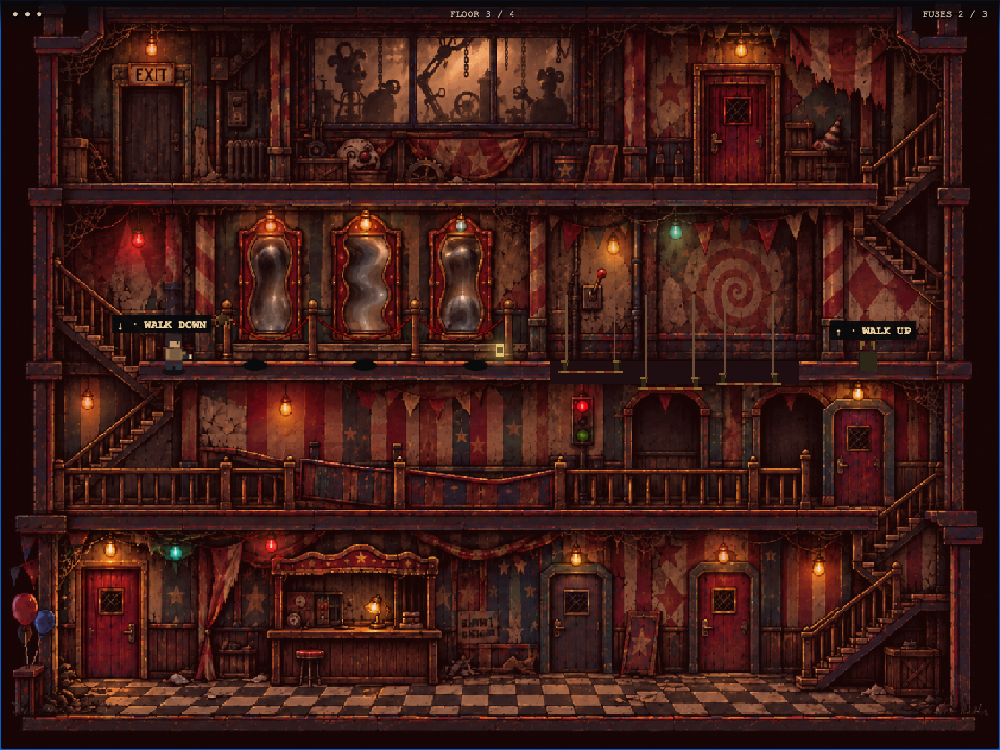
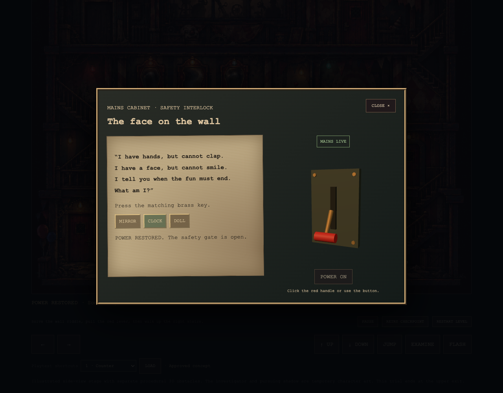

Play the updated level · Select RESTART LEVEL to try the new wall puzzle from the beginning.



Stairs now use movement controls and can be stopped or reversed. The wall riddle releases a safety catch; pulling the red lever then restores power. The former mirror pendulum is replaced with three proximity-triggered spiders, with visible warnings and locked landing targets. The existing barrel, moving floor and final chase remain.
53 model tests pass. Desktop/touch interaction checks and a complete browser escape passed without page errors. All eight procedural asset modules pass the official 404 harness. This is local browser validation, not a physical-phone performance result.